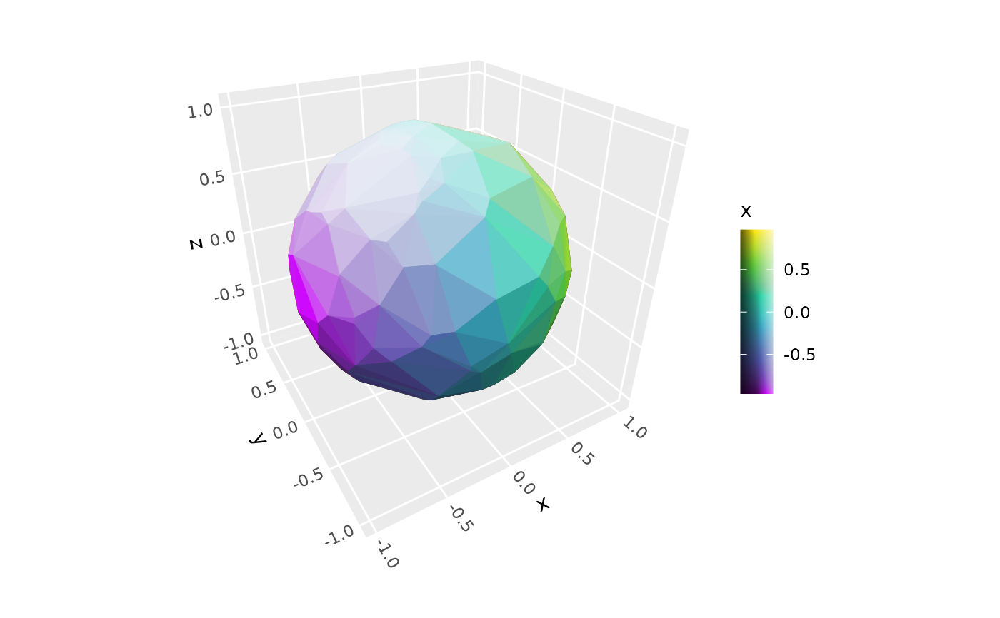
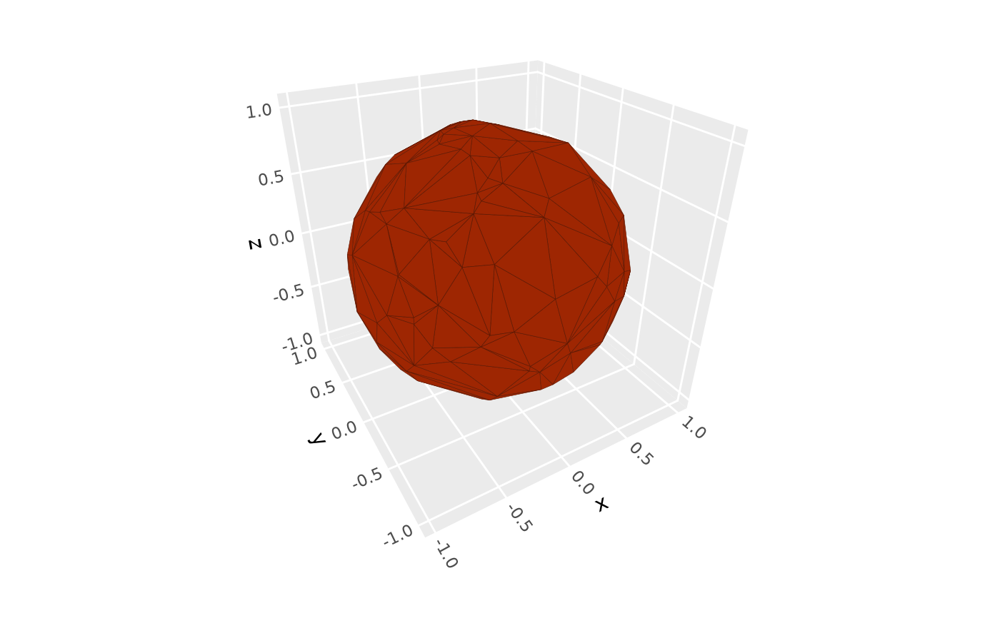
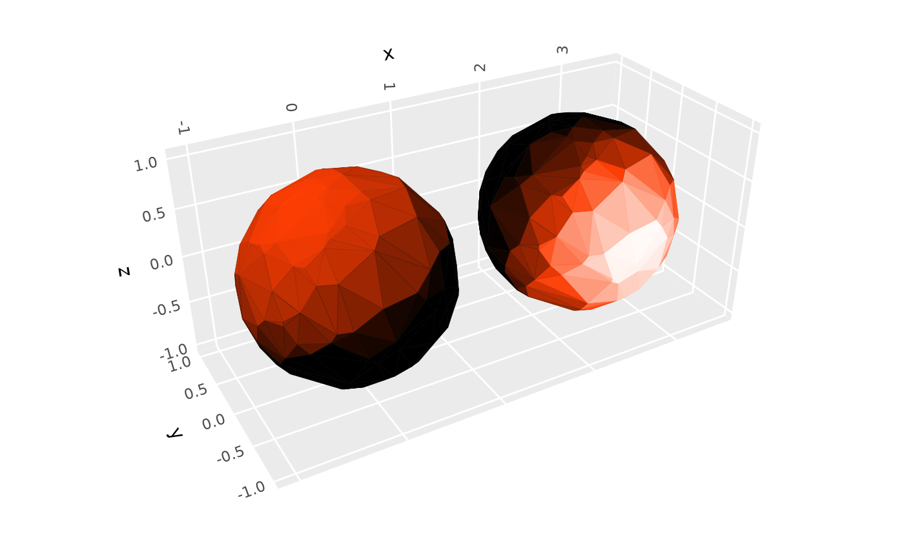
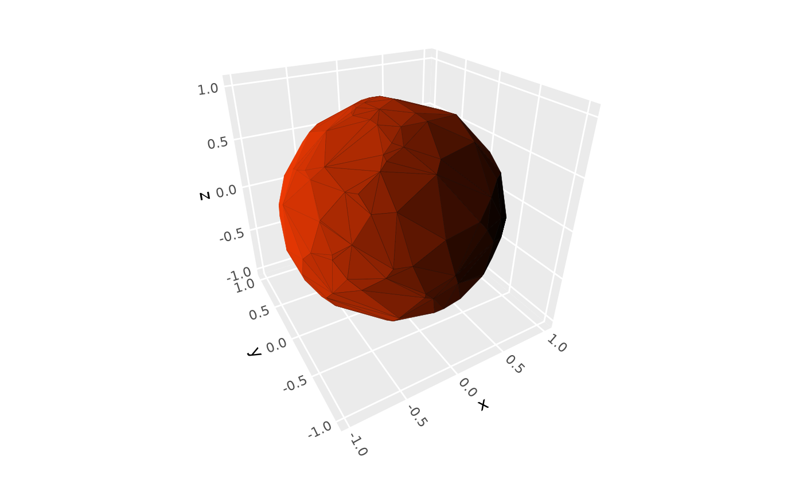
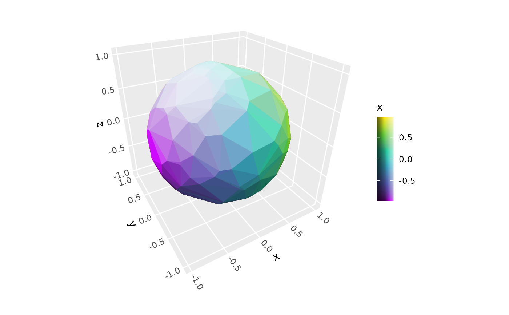
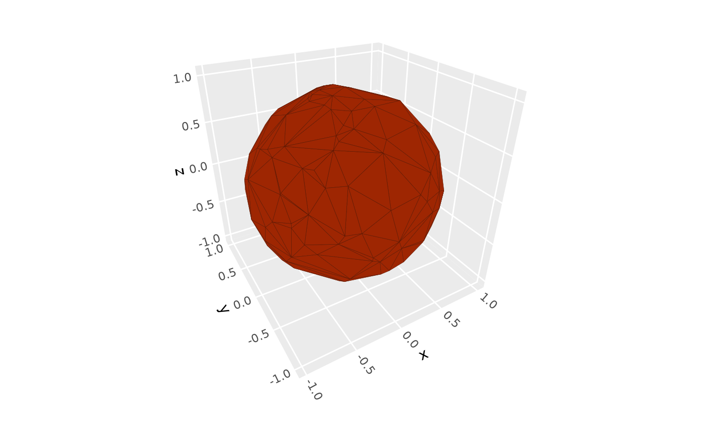
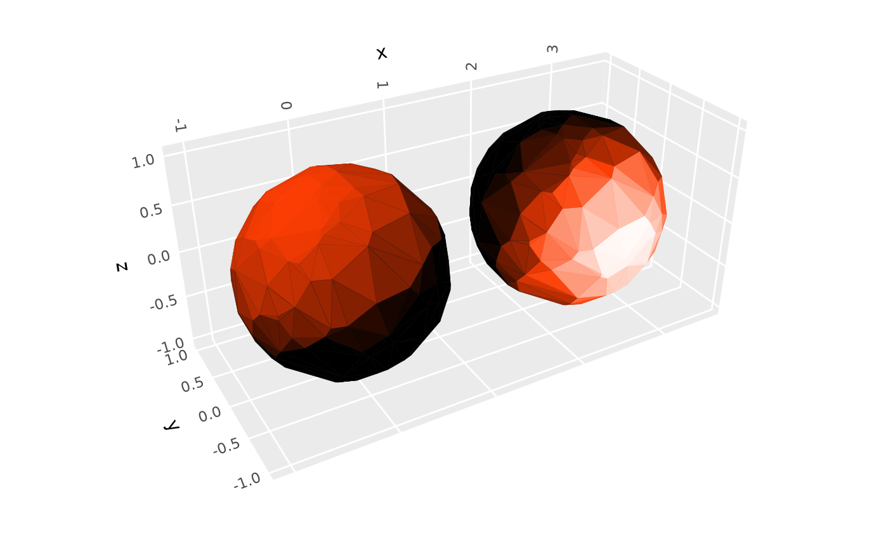
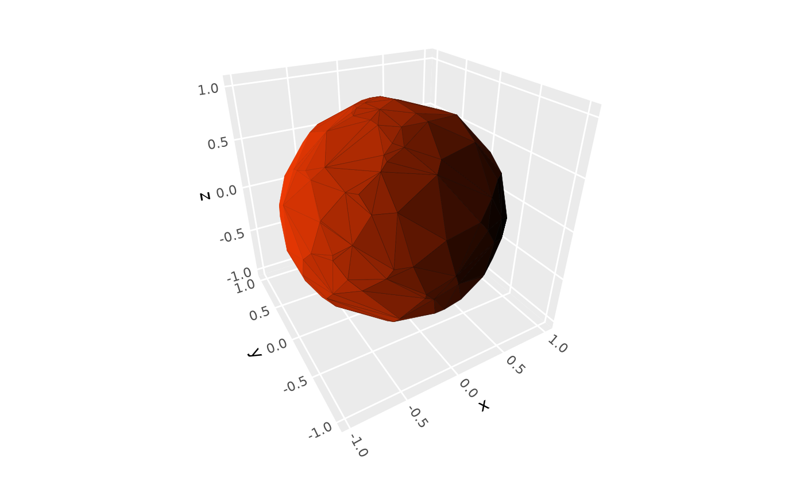

Creates a lighting specification object for use with 3D polygon layers. Lighting modifies the brightness of fill and/or base color aesthetics based on surface orientation (i.e., it implements form shadows but not cast shadows). Various options are available to control light qualities and light source location.
Usage
light(
method = "diffuse",
direction = c(1, 0, 1),
position = NULL,
distance_falloff = FALSE,
fill = TRUE,
color = TRUE,
mode = "hsv",
contrast = 1
)Arguments
- method
Character string specifying lighting model:
"diffuse": The default. Atmospheric lighting with soft shadows (only surfaces pointing directly away from light source are fully dark; base color occurs on surfaces perpendicular to light)"direct": Direct lighting with hard shadows (all surfaces angled beyond 90 degrees from light source are fully dark; base color occurs on surfaces angled 45 degrees toward light)"normal_rgb": Map surface normals to RGB colors
- direction
Numeric vector of length 3 specifying direction in 3D space that light comes from for directional lighting. The default is
c(1, 0, 1), giving diagonal lighting from the upper right edge with default rotation. Common examples:c(0, 0, 1)gives overhead lighting,c(1, 0, 0)lights surfaces facing the positive x direction, andc(-1, -1, 0)lights surfaces facing negative x-y edge. At least one value must be non-zero. Values are automatically normalized, so magnitude doesn't matter, only sign and relative magnitude. Direction is relative to the data axes, not the rotated figure. This argument is ignored ifpositionis provided.- position
Numeric vector of length 3 specifying light source position in data coordinate space for positional lighting. When specified, each face gets its own light direction calculated from the light position to the face center. Mutually exclusive with
direction. Default is NULL (use directional lighting).- distance_falloff
Logical indicating whether to apply distance-based intensity falloff for positional lighting using inverse square law (intensity ∝ 1/distance²). Only used when
positionis specified. Default is FALSE.- fill
Logical indicating whether to apply lighting to fill colors. Default is TRUE.
- color
Logical indicating whether to apply lighting to border/line colors. Default is TRUE.
- mode
Character string specifying color lighting mode:
"hsv": The default. Modifies value component of HSV color (fades to bright colors at high end, black at low end)"hsl": Modifies lightness component of HSL color (fades to white at high end, black at low end)
- contrast
Numeric value greater than zero controlling the intensity of lighting effects. 1.0 (the default) gives full black-to-white range. Values less than 1 give subtler effects, while values greater than 1 give more dramatic effects.
Details
Note that light-like effects can also be achieved in some stats by mapping color
aesthestics to computed variables such as after_stat(dzdx); see stat_surface_3d()
for examples.
See also
stat_surface_3d, stat_voxel_3d, stat_pillar_3d, scale_colorbar_shade
Examples
# base plot used in examples
p <- ggplot(mountain, aes(x, y, z)) + coord_3d(ratio = c(1, 1.5, 1))
# Light qualities ------------------------
# default diffuse lighting
p + stat_surface_3d(fill = "steelblue", color = "black")
 # use "hsl" mode to fade highlights to white
p + stat_surface_3d(fill = "steelblue", color = "black",
light = light(mode = "hsl"))
# use "hsl" mode to fade highlights to white
p + stat_surface_3d(fill = "steelblue", color = "black",
light = light(mode = "hsl"))
 # adjust lighting intensity with `contrast`
p + stat_surface_3d(fill = "steelblue", color = "black",
light = light(mode = "hsl", contrast = 2))
# adjust lighting intensity with `contrast`
p + stat_surface_3d(fill = "steelblue", color = "black",
light = light(mode = "hsl", contrast = 2))
 # use "direct" lighting to apply full shade to unlit surfaces
p + stat_surface_3d(fill = "steelblue", color = "black",
light = light(method = "direct", contrast = .75))
# use "rgb" to plot each face orientation in a unique color
p + stat_surface_3d(light = light(method = "normal_rgb"))
#> Warning: Color shading is not supported with normal_rgb lighting method
#> Warning: Color shading is not supported with normal_rgb lighting method
# use "direct" lighting to apply full shade to unlit surfaces
p + stat_surface_3d(fill = "steelblue", color = "black",
light = light(method = "direct", contrast = .75))
# use "rgb" to plot each face orientation in a unique color
p + stat_surface_3d(light = light(method = "normal_rgb"))
#> Warning: Color shading is not supported with normal_rgb lighting method
#> Warning: Color shading is not supported with normal_rgb lighting method
 # Lighting targets -----------------------
# use `fill` and `color` to select which aesthetics get lighting
p + stat_surface_3d(fill = "steelblue", color = "black",
light = light(fill = TRUE, color = FALSE))
# disable lighting entirely
# (equivalent to specifying `light(fill = FALSE, color = FALSE`))
p + stat_surface_3d(fill = "steelblue", color = "black", light = NULL)

# apply lighting on top of aesthetic mapping, with shaded guide
p + stat_surface_3d(aes(fill = z, color = z),
light = light(contrast = 2)) +
scale_fill_viridis_c() +
scale_color_viridis_c() +
guides(fill = guide_colorbar_shaded())

# Light sources -----------------------
# set directional light as horizontal from back left corner
# (left = negative x, back = positive y, horizontal = neutral z)
p + stat_surface_3d(fill = "steelblue", color = "black",
light = light(direction = c(-1, 1, 0)))

# specify positional light source within plot
p + stat_surface_3d(fill = "red", color = "red",
light = light(position = c(.5, .7, 95),
distance_falloff = TRUE,
mode = "hsl", contrast = .9))

# Lighting targets -----------------------
# use `fill` and `color` to select which aesthetics get lighting
p + stat_surface_3d(fill = "steelblue", color = "black",
light = light(fill = TRUE, color = FALSE))
# disable lighting entirely
# (equivalent to specifying `light(fill = FALSE, color = FALSE`))
p + stat_surface_3d(fill = "steelblue", color = "black", light = NULL)

# apply lighting on top of aesthetic mapping, with shaded guide
p + stat_surface_3d(aes(fill = z, color = z),
light = light(contrast = 2)) +
scale_fill_viridis_c() +
scale_color_viridis_c() +
guides(fill = guide_colorbar_shaded())

# Light sources -----------------------
# set directional light as horizontal from back left corner
# (left = negative x, back = positive y, horizontal = neutral z)
p + stat_surface_3d(fill = "steelblue", color = "black",
light = light(direction = c(-1, 1, 0)))

# specify positional light source within plot
p + stat_surface_3d(fill = "red", color = "red",
light = light(position = c(.5, .7, 95),
distance_falloff = TRUE,
mode = "hsl", contrast = .9))
